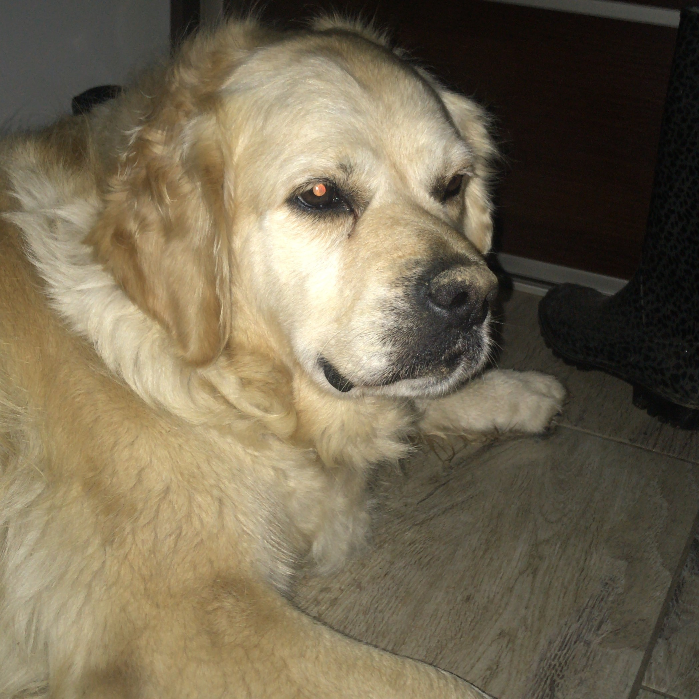

Najpiękniejszy pies na świecie
10-latka rasy golden retriever podbija świat!
Tequila to piękna pisnka zamieszkująca miasto Kraków. Ciężko nie zwrócić na nią uwagi na ulicy, skoro to tak słodkie stworzenie. Aktualnie mocno udziela się w social mediach i wielu z Was ją kojarzy. Strona ta poświęcona jest w 100% informacjom na jej temat. Dowiesz się skąd pochodzi, co lubi robić, ile ma lat, a także odnajdziesz tu linki do wszystkich jej social mediów!
Czytaj dalej aby dowiedzieć się o niej więcej...
Krótka historia
Tequila urodziła się 7 pażdziernika 2011 roku na podkarpaciu. Po ponad 2 miesiącach, 22 grudnia, trafiła do
swojego nowego, prawdziwego domu.
Miała być prezentem dla dwóch dziewczynek, Darii i Natalki, stała się jednak czymś więcej, członkiem rodziny!
Imię Tequila zostało wybrane przez Natalkę, inspiracją był stary serial z 1992 roku o nazwie "Tequila i
Bonetti". W serialu tym Tequila to pies, który jest parterem policjanta w Kalifornii.
Spędziła ona 9 lat swojego życia na wsi w Bieszczadach. Jej hobby to kopanie w ziemii i polowanie na dzikie
zwierzęta.

Dalsze losy Tesi
Po 9 wspaniałych latach spędzonych na wsi, Tequila wraz z Natalką przeprowadziła się do Krakowa. Stała się
trochę leniwa i chciała ciągle przebywać z ludźmi, a w Krakowie mogła to robić.
Od dwóch lat mieszka w dzielnicy Bronowice, chodzi codziennie na spacery i do parków dla psów. Dostaje wiele
uwagi od swoich kochających rodziców, lepsze jedzonko i dużo smaczków.
Dlaczego ona?
Właściciele zdecydowali się wybrać ją z kilku powodów. Pierwszym była rasa, która była wymarzoną od lat przez Darię. Kolejnym powodem było to, że Tequila została jako ostatni szczeniak ze swojego rodzeństwa w hodowli. Nikt nie chciał jej wziąć, ponieważ miała złamaną łapkę i lekko wykrzywiony nosek. Jej nowi właściciele zakochali się niej jednak od razu! Sami spójrzcie...
2011
2013

2015
2018

2020

2022
- Przyjazna
- Kocha zabawy z ludźmi
- Zima to jej ulubiona pora roku
- Uwielbia głaskanie i jedzenie
- Kocha pływać
- Uparta
- Atencyjna
- Nie lubi zostawać sama w domu
- Leniwa
- Wszystko co jedzą jej właściciele
- Kostki
- Smaczki dla piesków
- Maliny
- Orzechy
- Galaretki z nóżek
- Resztki z obiadu
- Parówki
- Mleko
| Rok | 2011 | 2016 | 2022 |
| Wiek (psie lata) | 3 mies. | 4 lata | 10 lat |
| Waga | 9 kg | 32 kg | 40 kg |
| Wiek (ludzkie lata) | 3 lata | 33 lata | 75 lat |
Social media:
- Instagram: @tequilagoldenretriever
 Tiktok:: @goldentequila
Tiktok:: @goldentequila
 Facebook: Tequila Twardy
Facebook: Tequila Twardy